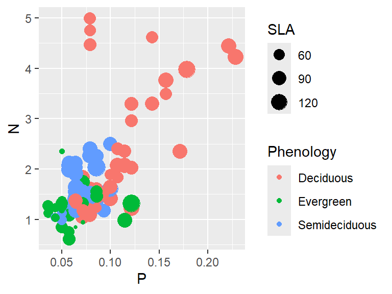
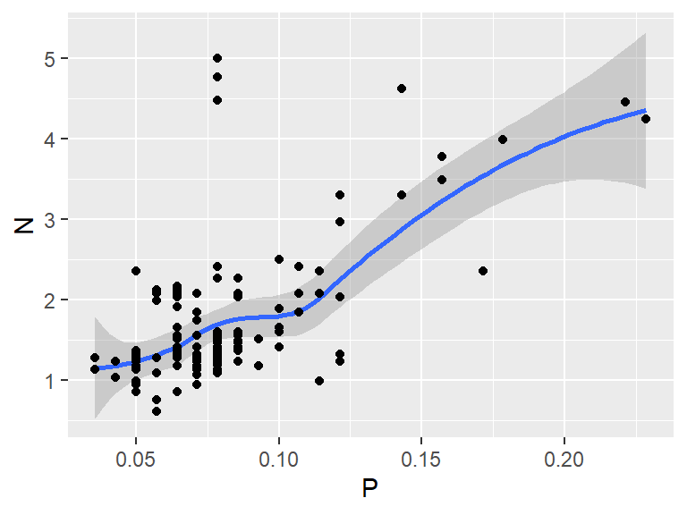
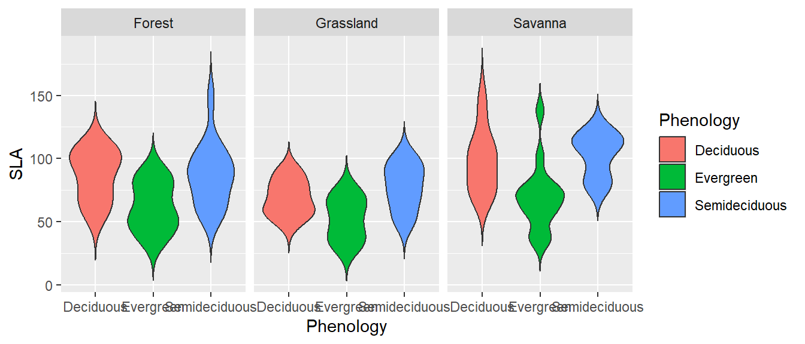
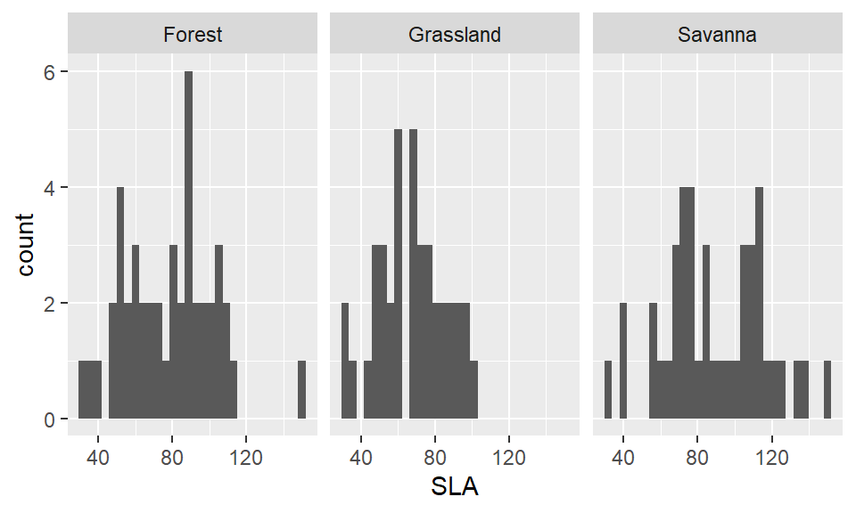
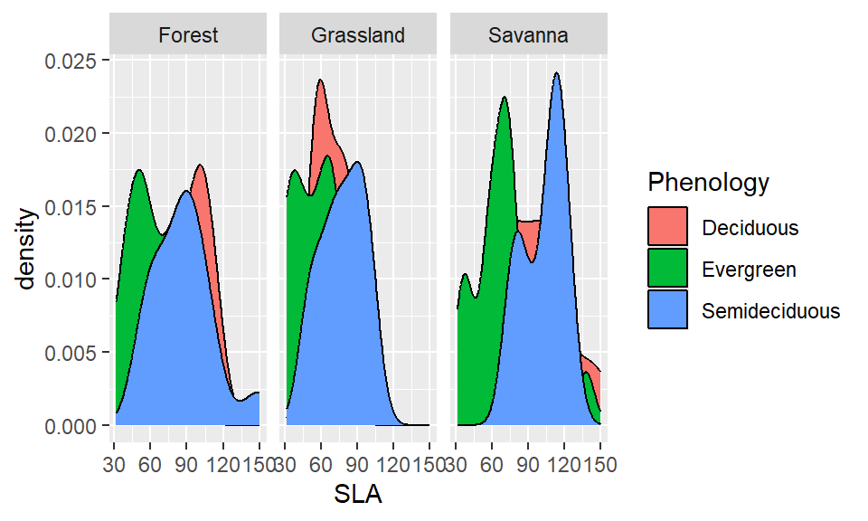

Script utilizado na aula da semana 3 da disciplina Manipulação e Visualização de Dados no R para demostrar as funções básicas do pacote ggplot2do tidyverse.
Introdução básica do ggplot2
Tipos de gráficos
Pontos
Linhas
Boxplots
Histogramas
Densidade
Barras
Instalando os pacotes
Nessa aula vamos utilizar o conjunto de dados da aula 1 e da aula 2 para demostrar as funções do ggplot2 do tidyverse. O primeiro passo então é carregar o pacote. Confiram a versão e atualizem usando a função tidyverse_update()!
── Attaching core tidyverse packages ──────────────────────── tidyverse 2.0.0 ──
✔ dplyr 1.1.4 ✔ readr 2.1.5
✔ forcats 1.0.1 ✔ stringr 1.5.2
✔ ggplot2 4.0.0 ✔ tibble 3.3.0
✔ lubridate 1.9.4 ✔ tidyr 1.3.1
✔ purrr 1.1.0
── Conflicts ────────────────────────────────────────── tidyverse_conflicts() ──
✖ dplyr::filter() masks stats::filter()
✖ dplyr::lag() masks stats::lag()
ℹ Use the conflicted package (<http://conflicted.r-lib.org/>) to force all conflicts to become errors
# tidyverse_update()
Carregando o conjunto de dados
Agora vamos determinar o diretório de trabalho e carregar os dados, conforme aprendemos na aula anterior. Vamos usar o conjunto de dados já manipulados, que fizemos na aula anterior e salvamos em.csv
Você deve colocar o diretório de acordo com o seu caminho no computador, e de acordo com a localização dos seus dados.
# setwd("C:/Marina/Pos-doutorado/PNPD_UFPR/Vis Man Dados/2024/Semana3")dados<-read.csv("Dados_english.csv")str(dados)
'data.frame': 129 obs. of 13 variables:
$ Vegetation: chr "Forest" "Forest" "Forest" "Forest" ...
$ Species : chr "AT" "AT" "AT" "BC" ...
$ Phenology : chr "Deciduous" "Deciduous" "Deciduous" "Semideciduous" ...
$ N : num 2.36 2.07 2.03 1.32 1.23 ...
$ P : num 0.1143 0.1143 0.1214 0.0643 0.0714 ...
$ Mg : num 0.15 0.18 0.133 0.159 0.113 ...
$ K : num 1.197 1.444 0.366 0.679 0.957 ...
$ Ca : num 0.319 0.413 0.371 0.576 0.458 ...
$ Aluminium : num 122.8 251.8 206.5 96.8 103.3 ...
$ Leaf.Area : num 288 262 184 149 263 ...
$ Leaf.Mass : num 3.63 2.49 2.16 1.86 4.39 ...
$ SLA : num 79.2 105.2 84.9 80.1 59.8 ...
$ N.P : num 20.6 18.1 16.7 20.5 17.2 ...
Estrutura
O ggplot2 funciona com uma estrutura de camadas. Começamos com uma camada em branco e adicionamos as camadas de acordo com o que queremos visualizar.
A estrutura do gráfico, determinada pela função aes() - aestethics - pode aparecer na primeira camada ggplot ou nas camadas subsequentes geom_.
aes() descreve o mapeamento dos aspectos visuais dos gráficos
Aparecendo na primeira camada ggplot, essa estética será usada para todas as camadas subsequentes. Especificando separadamente para cada camada geom_, isso não acontece!
Tipos de gráficos
Temos vários tipos de gráficos que igualmente são adicionados como camadas. Todos seguem a mesma lógica ao serem adicionados, mas o tipo de variável (fatores ou numéricas) que você quiser mostrar dependem do tipo.
Uma página muito boa para verificar qual tipo de gráfico é mais apropriado para representar seus dados é a https://www.data-to-viz.com/. Vale a pena explorar!
Gráfico de pontos
Para adicionar a camada e fazer um gráfico de pontos, usamos o símbolo + após a primeira camada e o comando geom_point().
Podemos atribuir a coloração de acordo com uma variável contínua da mesma forma, dentro da função aes(). Dessa forma, o ggplot cria um gradiente de cores baseando-se nos valores da variável
Warning: Removed 3 rows containing missing values or values outside the scale range
(`geom_point()`).

Gráfico de linha
As camadas geom_line(), geom_smooth() e geom_abline() são aquelas que vão adicionar linhas no gráfico. Elas tem diferenças básicas:
geom_line() liga os pontos do seu dataset. Apenas informativa quando a variável independente é ordenada
geom_smooth() aplica o modelo loess (locally estimated scatterplot smoothing) nos dados. Basicamente um geom_line menos abrupto. Pode modificar os method de acordo com sua necessidade.
O default do método aplicado no geom_smooth() é loess (locally estimated scatterplot smoothing)
Você pode juntar as camadas de pontos com a camada da linha adicionando a camada de geom_point()
`geom_smooth()` using method = 'loess' and formula = 'y ~ x'

No entanto, normalmente queremos adicionar linhas de tendência, considerando algum modelo linear por exemplo. Para isso, podemos:
Utilizar a camada geom_abline(), onde os atributos da curva devem ser informados (intercept e slope). Previamente então, devemos calcular essas variáveis a serem informadas
Utilizar geom_smooth() especificando o método de ajuste do modelo (no caso vamos usar “lm” para linear model).
Podemos também separar grupos nos gráficos de linhas. Perceba que, caso o atributo color esteja especificado no aes() do ggplot() isso se aplicará para todas as camadas subsequentes.
Geralmente, dependendo de como queremos mostrar, a visualização fica mais limpa se os gráficos forem divididos em facetas. Para isso, adicionamos uma nova camada cahamda facet_wrap() que determina o fator para essa divisão.
Você pode customizar como você quer que elas sejam arranjadas com ncol e nrow Você também pode deixar todas na mesma escala (default) ou deixar cada uma com a escala mais apropriada Veja mais opções em help
Boxplot são muito utilizados porque, além de demostrar tendência de medidas centrais (mediana, no caso) para comparação direta, permite uma visualização clara da distribuição dos dados (variabilidade), bem como outliers.
Para esse tipo de gráfico, a variável independente (no eixo x) deve ser categórica/fatorial.
Para o caso de cores, que será aprofundado na aula de customização, boxplots permitem mudanças na cor em torno das caixas com o atributo color ou no preenchimento das caixas. Nesse caso, o atributo fill deve ser utilizado. Veja a diferença
Warning: Removed 3 rows containing non-finite outside the scale range
(`stat_ydensity()`).

Para exibir seu dados - todos os pontos - pode-se adicionar mais uma camada denominada geom_jitter(). Geom_jitter exibe seus pontos afastados numa posição randômica para não se sobreporem
Mostram a frequência e dispersão/distribuição dos dados, então só requer uma variável x (numérica!). Pode ser útil para verificar normalidade dos dados, por exemplo. Ou outliers.
`stat_bin()` using `bins = 30`. Pick better value `binwidth`.
Warning: Removed 3 rows containing non-finite outside the scale range
(`stat_bin()`).

Densidade
Da mesma forma que o histograma, gráficos de densidade também podem mostrar a distribuição dos dados. Ao invés de simplesmente contagem de ocorrência (como no histograma), esse tipo de gráfico baseia-se na contagem por unidade, e por usar uma técnica de suavização de Kernel, são vizualmente mais elegantes.
Warning: Removed 3 rows containing non-finite outside the scale range
(`stat_density()`).

Gráfico de barras
Adicionando a camada geom_bar(), obtemos um gráfico de barras que representa contagens para dados categóricos. Portanto, gráfico de barras é útil principalmente quando a vairiável x é categórica. Perceba que nesse caso, o default da função é a contagem das ocorrências (stat = “count”)
---title: "Aula 3 - Visualização de Dados"subtitle: "Aula prática"author: "Marina Scalon"title-block-banner: trueformat: html: code-link: true code-tools: true theme: minty toc: true---Script utilizado na aula da semana 3 da disciplina Manipulação e Visualização de Dados no R para demostrar as funções básicas do pacote `ggplot2`do `tidyverse`. 1. Introdução básica do ggplot22. Tipos de gráficos a. Pontos b. Linhas c. Boxplots d. Histogramas e. Densidade f. Barras## Instalando os pacotesNessa aula vamos utilizar o conjunto de dados da aula 1 e da aula 2 para demostrar as funções do ggplot2 do tidyverse. O primeiro passo então é carregar o pacote. Confiram a versão e atualizem usando a função *tidyverse_update()*!```{r}library(tidyverse)# tidyverse_update()```## Carregando o conjunto de dadosAgora vamos determinar o diretório de trabalho e carregar os dados, conforme aprendemos na aula anterior. Vamos usar o conjunto de dados já manipulados, que fizemos na aula anterior e salvamos em.csv> Você deve colocar o diretório de acordo com o seu caminho no computador, e de acordo com a localização dos seus dados.```{r}# setwd("C:/Marina/Pos-doutorado/PNPD_UFPR/Vis Man Dados/2024/Semana3")dados <-read.csv("Dados_english.csv")str(dados)```# EstruturaO ggplot2 funciona com uma estrutura de camadas. Começamos com uma camada em branco e adicionamos as camadas de acordo com o que queremos visualizar.```{r, fig.height=3, fig.width=3}ggplot(data = dados)```## Aesthetics - **aes()**A estrutura do gráfico, determinada pela função **aes()** - aestethics - pode aparecer na primeira camada *ggplot* ou nas camadas subsequentes *geom_*. aes() descreve o mapeamento dos aspectos visuais dos gráficosAparecendo na primeira camada *ggplot*, essa estética será usada para todas as camadas subsequentes. Especificando separadamente para cada camada *geom_*, isso não acontece!# Tipos de gráficosTemos vários tipos de gráficos que igualmente são adicionados como camadas. Todos seguem a mesma lógica ao serem adicionados, mas o tipo de variável (fatores ou numéricas) que você quiser mostrar dependem do tipo.Uma página muito boa para verificar qual tipo de gráfico é mais apropriado para representar seus dados é a <https://www.data-to-viz.com/>. Vale a pena explorar!## Gráfico de pontosPara adicionar a camada e fazer um gráfico de pontos, usamos o símbolo **+** após a primeira camada e o comando **geom_point()**.```{r, fig.height=3, fig.width=3}ggplot(data = dados, aes(x=P, y=N)) +geom_point()ggplot(data = dados) +geom_point(aes(x=P, y=N))```Podemos adicionar a camada de cores de acordo com uma variável categórica especificando *color* dentro da função **aes()**. Da mesma forma, podemos modificar o símbolo atribuindo uma variável categórica ao *shape*.Para modificar o tamanho dos símbolos basta alterar o atributo *shape* dentro de **aes()**```{r, fig.height=3, fig.width=4}ggplot(data = dados, aes(x=P, y=N, color= Phenology)) +geom_point()ggplot(data = dados, aes(x=P, y=N, shape= Vegetation)) +geom_point()ggplot(data = dados, aes(x=P, y=N, color= Phenology, shape = Vegetation, size=2)) +geom_point()```Podemos atribuir a coloração de acordo com uma variável contínua da mesma forma, dentro da função **aes()**. Dessa forma, o ggplot cria um gradiente de cores baseando-se nos valores da variável```{r, fig.height=3, fig.width=4}ggplot(data = dados, aes(x=P, y=N, color= SLA, size=2)) +geom_point()```Também podemos atribuir o tamanho do símbolo de acordo com uma variável contínua da mesma forma, dentro da função **aes()**.```{r, fig.height=3, fig.width=4}ggplot(data = dados, aes(x=P, y=N, color= Phenology, size=SLA)) +geom_point()```## Gráfico de linhaAs camadas *geom_line()*, *geom_smooth()* e *geom_abline()* são aquelas que vão adicionar linhas no gráfico. Elas tem diferenças básicas:1. *geom_line()* liga os pontos do seu dataset. Apenas informativa quando a variável independente é ordenada2. *geom_smooth()* aplica o modelo **loess (locally estimated scatterplot smoothing)** nos dados. Basicamente um geom_line menos abrupto. Pode modificar os method de acordo com sua necessidade.> O default do método aplicado no geom_smooth() é loess (locally estimated scatterplot smoothing)3. Você pode juntar as camadas de pontos com a camada da linha adicionando a camada de *geom_point()*```{r, fig.height=3, fig.width=4}ggplot(data = dados, aes(x=P, y=N)) +geom_line()ggplot(data = dados, aes(x=P, y=N)) +geom_smooth()ggplot(data = dados, aes(x=P, y=N)) +geom_smooth()+geom_point()```No entanto, normalmente queremos adicionar linhas de tendência, considerando algum modelo linear por exemplo. Para isso, podemos:1. Utilizar a camada *geom_abline()*, onde os atributos da curva devem ser informados (intercept e slope). Previamente então, devemos calcular essas variáveis a serem informadas2. Utilizar *geom_smooth()* especificando o método de ajuste do modelo (no caso vamos usar "lm" para linear model). ```{r, fig.height=3, fig.width=4}coef(lm(N ~ P, data = dados))ggplot(data = dados, aes(x=P, y=N)) +geom_point()+geom_abline(intercept =0.3046, slope =17.47)ggplot(data = dados, aes(x=P, y=N)) +geom_point()+geom_smooth(method ="lm")```Podemos também separar grupos nos gráficos de linhas. Perceba que, caso o atributo *color* esteja especificado no *aes()* do **ggplot()** isso se aplicará para todas as camadas subsequentes. ```{r, fig.height=3, fig.width=4}ggplot(dados, aes(x=P, y = N, color = Phenology)) +geom_point()+geom_smooth(method="lm")```Caso você deseje mudar APENAS a cor das curvas, ou dos pontos, o atributo *color* deve estar no aes() da camada desejada.```{r, fig.height=3, fig.width=4}ggplot(dados, aes(x=P, y = N)) +geom_point(aes(color = Phenology))+geom_smooth(method="lm")ggplot(dados, aes(x=P, y = N)) +geom_point()+geom_smooth(aes(color = Phenology), method="lm")```## FacetasGeralmente, dependendo de como queremos mostrar, a visualização fica mais limpa se os gráficos forem divididos em facetas. Para isso, adicionamos uma nova camada cahamda *facet_wrap()* que determina o fator para essa divisão.```{r, fig.height=3, fig.width=5}ggplot(dados, aes(x=P, y = N)) +geom_point(aes(color=Phenology))+geom_smooth(method="lm")+facet_wrap(~Vegetation)```::: callout-tip## Customizações das facetasVocê pode customizar como você quer que elas sejam arranjadas com **ncol** e **nrow**Você também pode deixar todas na mesma escala (default) ou deixar cada uma com a escala mais apropriadaVeja mais opções em **help**:::```{r, fig.height=5, fig.width=3}ggplot(dados, aes(x=P, y = N)) +geom_point(aes(color=Phenology))+geom_smooth(method="lm")+facet_wrap(~Vegetation, ncol=1, scales="free")```A camada **facet_grid** é equivalente, mas possibilita formar matrizes de gráficos quando temos 2 variáveis categóricas de interesse```{r, fig.height=3, fig.width=5}ggplot(dados, aes(x=P, y = N)) +geom_point(aes(color=Phenology))+geom_smooth(method="lm")+facet_grid(~Vegetation)``````{r, fig.height=3, fig.width=5}ggplot(dados, aes(x=P, y = N)) +geom_point(aes(color=Phenology))+geom_smooth(method="lm")+facet_grid(Phenology~Vegetation)```## BoxplotsBoxplot são muito utilizados porque, além de demostrar tendência de medidas centrais (mediana, no caso) para comparação direta, permite uma visualização clara da distribuição dos dados (variabilidade), bem como outliers.Para esse tipo de gráfico, a variável independente (no eixo x) deve ser categórica/fatorial.```{r, fig.height=3, fig.width=7}ggplot(dados, aes(x=Phenology, y = N)) +geom_boxplot()+facet_wrap(~Vegetation)```Para o caso de cores, que será aprofundado na aula de customização, boxplots permitem mudanças na cor em torno das caixas com o atributo *color* ou no preenchimento das caixas. Nesse caso, o atributo *fill* deve ser utilizado. Veja a diferença```{r, fig.height=3, fig.width=7}ggplot(dados, aes(x=Phenology, y = SLA, fill = Phenology)) +geom_boxplot()+facet_wrap(~Vegetation)ggplot(dados, aes(x=Phenology, y = SLA, color = Phenology))+geom_boxplot()+facet_wrap(~Vegetation)```## ViolinosOutra opção é utilizar o **geom_violin()**, que se baseia na distribuição probabilística de kernel```{r, fig.height=3, fig.width=7}ggplot(dados, aes(x=Phenology, y = SLA, fill = Phenology)) +geom_violin()+facet_wrap(~Vegetation)ggplot(dados, aes(x=Phenology, y = SLA, fill = Phenology)) +geom_violin(trim=F)+facet_wrap(~Vegetation)```Para exibir seu dados - todos os pontos - pode-se adicionar mais uma camada denominada **geom_jitter()**. Geom_jitter exibe seus pontos afastados numa posição randômica para não se sobreporem```{r, fig.height=3, fig.width=7}ggplot(dados, aes(x=Phenology, y=N))+geom_violin(aes(fill=Phenology),trim=F)+geom_jitter()+facet_wrap(~Vegetation)ggplot(dados, aes(x=Phenology, y=N))+geom_boxplot(width=0.2)+geom_jitter()+facet_wrap(~Vegetation)```## Histogramas Mostram a frequência e dispersão/distribuição dos dados, então só requer uma variável x (numérica!). Pode ser útil para verificar normalidade dos dados, por exemplo. Ou outliers. ```{r, fig.height=3, fig.width=5}ggplot(dados, aes(x=SLA)) +geom_histogram()+facet_wrap(~Vegetation)```## DensidadeDa mesma forma que o histograma, gráficos de densidade também podem mostrar a distribuição dos dados. Ao invés de simplesmente contagem de ocorrência (como no histograma), esse tipo de gráfico baseia-se na contagem por unidade, e por usar uma técnica de suavização de Kernel, são vizualmente mais elegantes.```{r, fig.height=3, fig.width=5}ggplot(dados, aes(x=SLA)) +geom_density()+facet_wrap(~Vegetation)ggplot(dados, aes(x=SLA, fill= Phenology)) +geom_density()+facet_wrap(~Vegetation)```## Gráfico de barrasAdicionando a camada geom_bar(), obtemos um gráfico de barras que representa contagens para dados categóricos. Portanto, gráfico de barras é útil principalmente quando a vairiável x é categórica. Perceba que nesse caso, o default da função é a contagem das ocorrências (stat = "count")```{r, fig.height=3, fig.width=7}ggplot(dados, aes(Phenology)) +geom_bar()+facet_wrap(~Vegetation)ggplot(dados, aes(as.factor(N))) +geom_bar()```Podemos aplicar outros tipos de métodos estatísticos na função para mostrar mais padrões:::: callout-tipUse a posição (position) para determinar onde suas barras estarão! O default é "stack" (uma em cima da outra):::```{r, fig.height=3, fig.width=7}ggplot(dados, aes(y=N, x=Species, fill=Vegetation)) +geom_bar(stat="identity")ggplot(dados, aes(y=N, x=Species, fill=Vegetation)) +geom_bar(stat="identity", position=position_dodge())```::: callout-tipPara ordenar os dados de maneira rápida de acordo com uma ordem crescente/descrescente, utilizar a função reorder diretamente no *aes()*::: ```{r, fig.height=3, fig.width=7}ggplot(dados, aes(y=N, x=reorder(Species, -N), fill=Vegetation)) +geom_bar(stat="identity", position=position_dodge())ggplot(dados, aes(y=N, x=reorder(Species, +N), fill=Vegetation)) +geom_bar(stat="identity", position=position_dodge())ggplot(dados, aes(x=reorder(Phenology, +N), y = N)) +geom_boxplot()+facet_wrap(~Vegetation)```::: callout-tipPara mudar a orientação, basta designar a variável categórica como y ao invés de x (default):::```{r, fig.height=7, fig.width=3}ggplot(dados, aes(x=N, y=reorder(Species, -N), fill=Vegetation)) +geom_bar(stat="identity", position=position_dodge())```# FIM (da primeira parte)